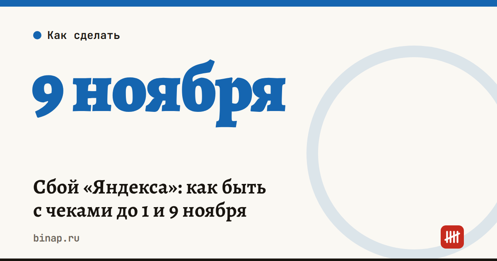

Сбой «Яндекса»: как быть с чеками до 1 и 9 ноября

После сбоя сервисов «Яндекса» в октябре часть чеков по оплатам через них не сформировалась. ФНС объяснила, что делать, и назвала две даты. Первая, 1 ноября, уже прошла. Вторая — 9 ноября 2026 года: до этого дня самозанятым нужно отразить в «Мой налог» доход, по которому чеки так и не пришли.
Коротко
- Чеки, которые не сформировались из-за сбоя, формируют позже как чеки коррекции (ч. 4 ст. 4.3 закона № 54-ФЗ — по данным ФНС).
- Самозанятым на платформах «Яндекса» чеки тоже формирует платформа после восстановления. До 1 ноября ФНС не рекомендовала создавать их вручную, чтобы не было дублей.
- Если чеки так и не пришли, доход нужно отразить в «Мой налог» самому не позднее 9 ноября 2026 года.
- Неприменение кассы из-за сбоя, по данным ФНС, может стать объективной причиной для освобождения от административной ответственности (ст. 1.5 КоАП).
- Дубль чека исправляют аннулированием с причиной «Чек сформирован ошибочно» — и сохраняют подтверждение.
Сроки, изменения и разборы для ИП и самозанятых — каждое утро в Telegram и MAX. Подпишитесь, чтобы не пропустить.
Что сделать самозанятому до 9 ноября
- Откройте «Мой налог» и выпишите чеки за дни сбоя по оплатам через платформу.
- Сверьте их со своими поступлениями: выпиской банка или отчётом платформы.
- По каждой оплате без чека сформируйте чек вручную с датой получения денег.
- Если чек пришёл дважды — один аннулируйте с причиной «Чек сформирован ошибочно» и сохраните скриншот обоих. ФНС сейчас тестирует модель, которая ищет самозанятых по частым отменам чеков, поэтому причина должна быть понятной. Подробнее — в статье ФНС ищет самозанятых по отменённым чекам.
Пример (расчёт редакции): у самозанятого за октябрь 12 оплат через платформу, а в «Мой налог» пришло 9 чеков. По трём оставшимся оплатам он формирует чеки сам до 9 ноября. Если позже платформа пришлёт их ещё раз, дубли аннулирует с причиной «Чек сформирован ошибочно».
Что сделать магазину
- Сверьте журнал оплат за дни сбоя с чеками коррекции, которые сформировала касса или платформа.
- Если каких-то чеков нет, сформируйте чеки коррекции по правилам своей кассы. Как именно — уточните у обслуживающей организации.
- Сохраните переписку и уведомления о сбое: они пригодятся, если налоговая спросит, почему чек пробит позже.
Как подстраховаться на будущее
- Ведите журнал оплат, которые проходят через сторонние сервисы: дата, сумма, номер заказа. Его легко сверить с чеками.
- Держите запасной способ принимать оплату — второй банк или эквайринг.
- Про сбои и запасные каналы — в разборе хостинг упал: что делать бизнесу.
Частые вопросы
До какого числа самозанятому отразить доход, если чек не пришёл из-за сбоя «Яндекса»? Не позднее 9 ноября 2026 года.
Что делать, если чек сформировался дважды? Аннулировать лишний с причиной «Чек сформирован ошибочно» и сохранить подтверждение.
Накажут ли магазин за чек, пробитый позже из-за сбоя? По данным ФНС, сбой может стать объективной причиной для освобождения от административной ответственности. Сохраните доказательства сбоя.